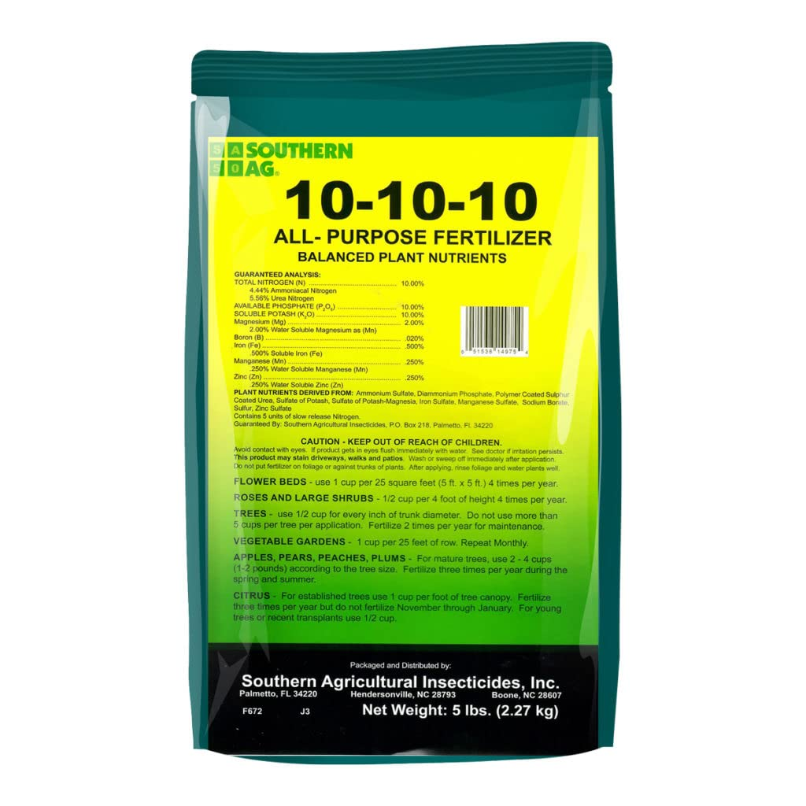

Brinjal
Market Price: ₹50 per kg
Rainy
Soil: well drain slit and clay loam soil

NPK Fertilizer (10-10-10)
Rs 1000 per Bag
Use for leafy growth and overall plant vigor
Content:
1. Nitrogen (N): 10%
2. Phosphorus (P): 10%
3. Potassium (K): 10%
Fertilizer
Organic Compost
Rs 55 per kg
Use for - Improves soil structure, water retention, and nutrient availability
Content:
1. Variety of nutrients
2. Organic matter
3. Beneficial microorganisms
Fertilizer